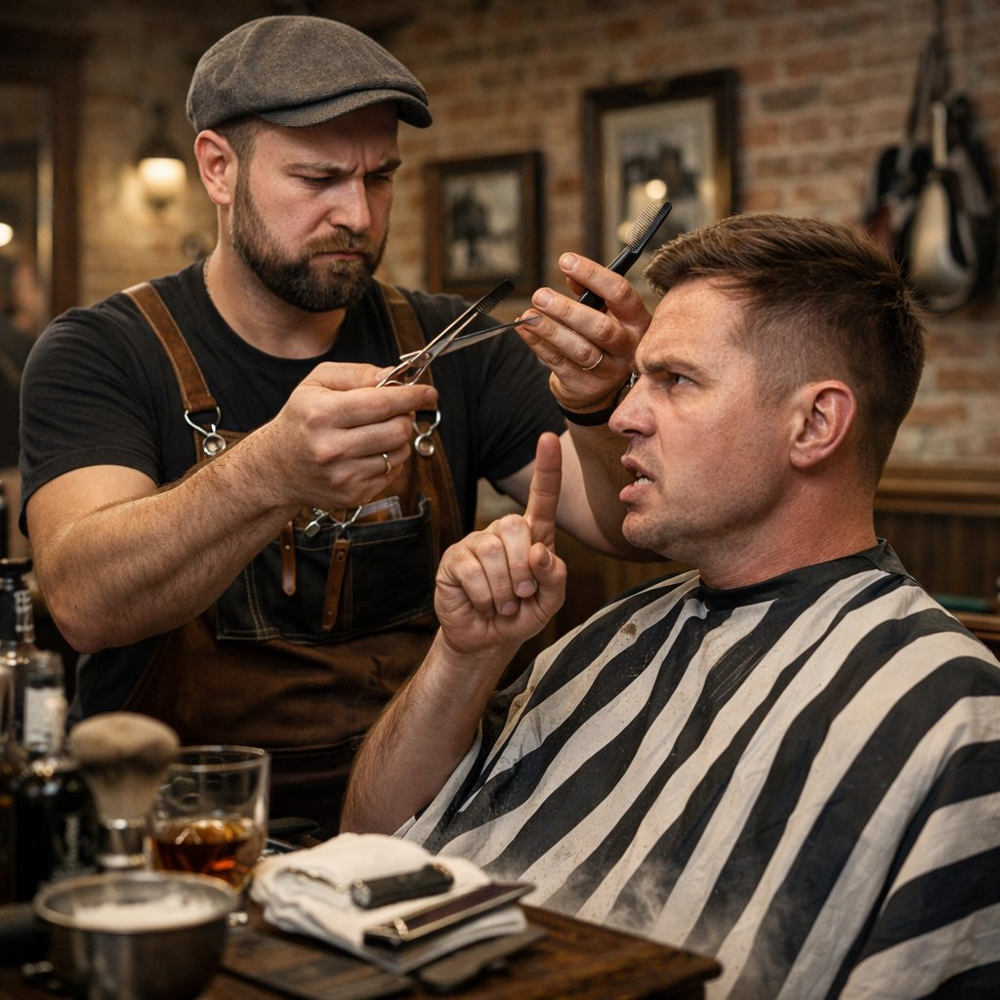
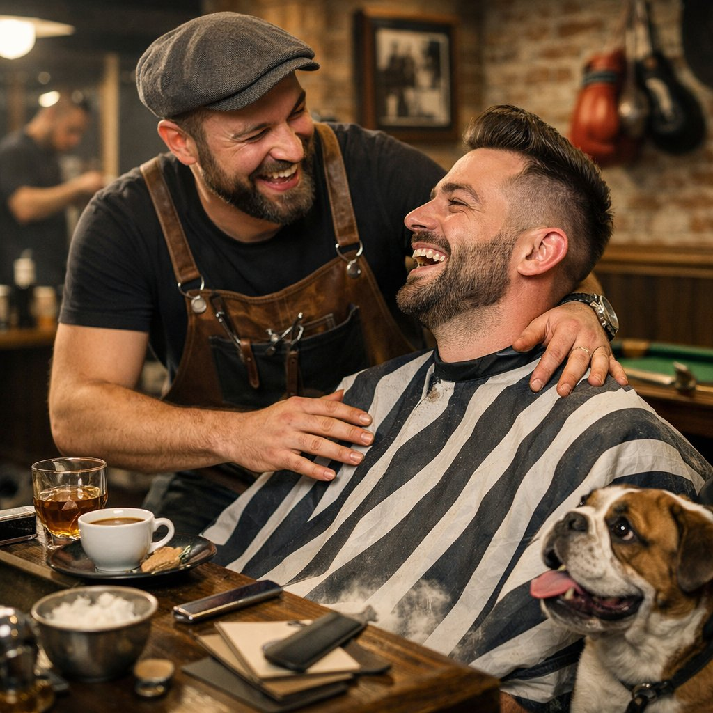
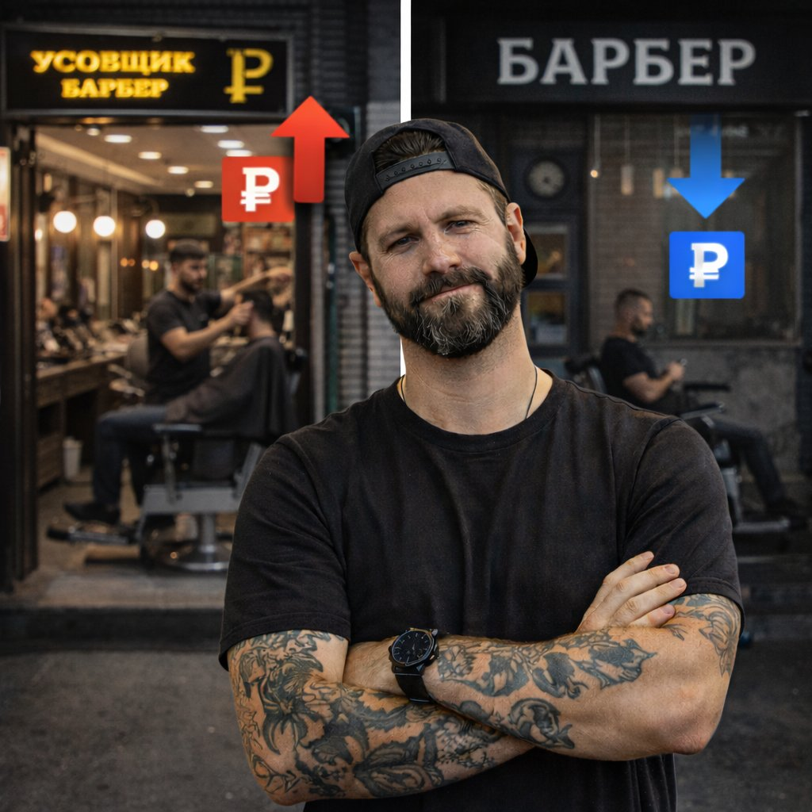
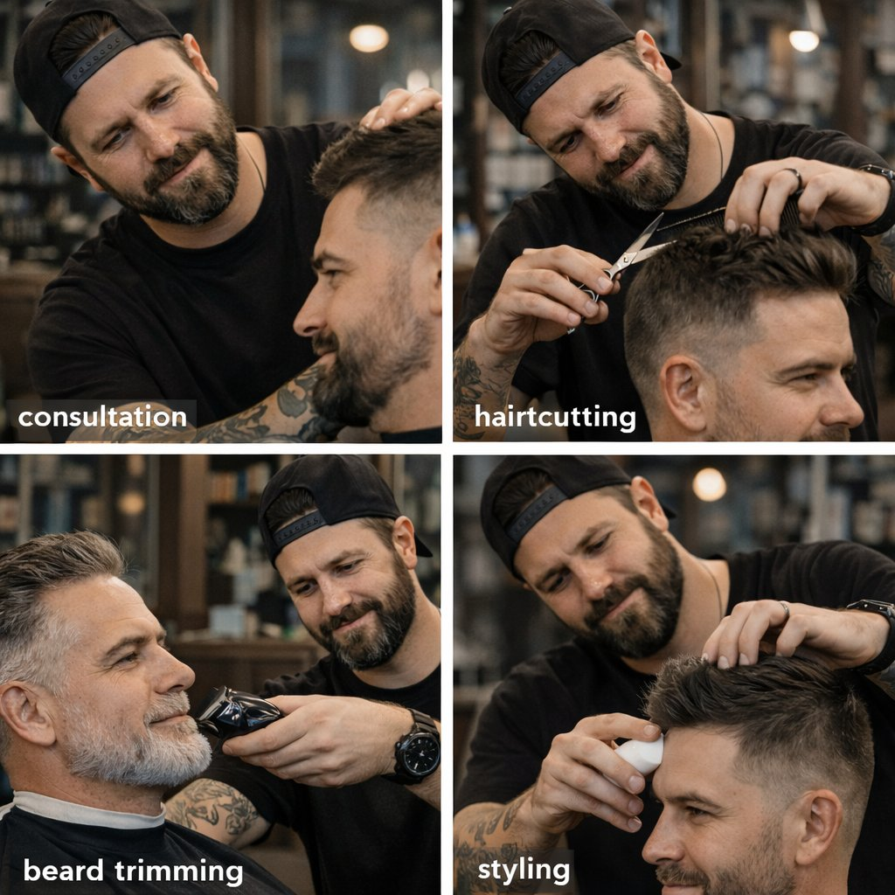
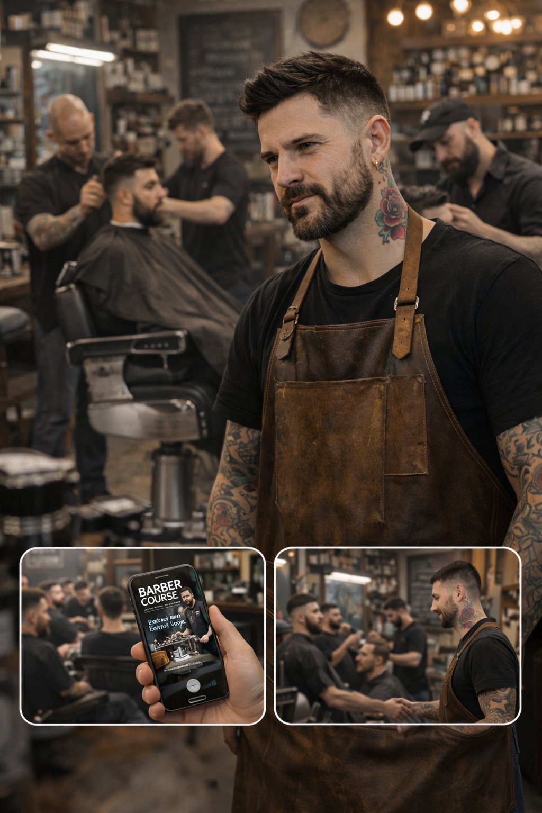
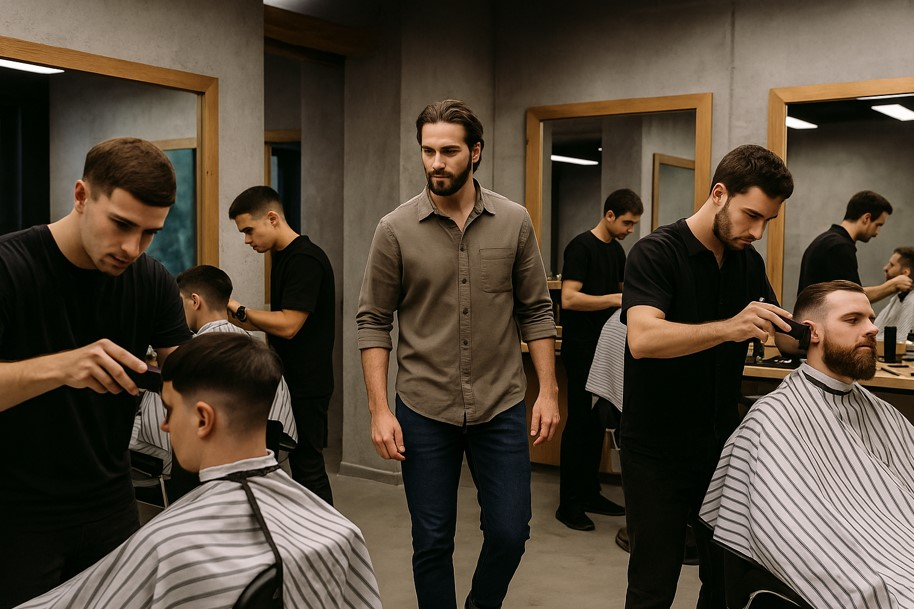

Первые клиенты барбера: как найти, удержать и не слить старт
Первые клиенты — самый сложный и важный этап в профессии барбера. Разбираем, где их искать, как не потерять и почему сервис на старте важнее идеальной техники.
Читать статью
Первые клиенты — самый сложный и важный этап в профессии барбера. Разбираем, где их искать, как не потерять и почему сервис на старте важнее идеальной техники.
Читать статью
Сильный барбершоп — это не интерьер и не поток клиентов. Разбираем, из каких элементов складывается устойчивая команда, сервис и среда, которая удерживает мастеров.
Читать статьюБарберинг — это не быстрый заработок, а профессия на длинную дистанцию. Разбираем, как развивается карьера барбера со временем и что влияет на устойчивость в профессии.
Читать статьюВ барберинге клиенты платят не только за стрижку. Стиль общения, умение выстроить контакт и создать доверие напрямую влияют на чек, возврат клиентов и стабильность дохода мастера.
Читать статью
Даже при одинаковом стаже и навыках барберы могут зарабатывать по-разному. Разбираем реальные причины различий в доходе и типичные ошибки на старте.
Читать статьюПрофессия барбера изменилась. Сегодня важны не только техника и форма, но и сервис, общение и доверие клиента.
Читать статьюМногие считают, что успешная карьера барбера возможна только в столице. В статье разбираем, как город влияет на рост и почему стратегия важнее географии.
Читать статьюНовички часто выбирают между переездом и обучением. В статье разбираем, что на самом деле влияет на рост в профессии и почему стратегия важнее географии.
Читать статьюБарберинг — это не только клиенты и стиль, но и высокая нагрузка. В этой статье разбираем, почему возникает выгорание и как выстроить работу так, чтобы не потерять мотивацию.
Читать статьюРабота барбера возможна не только в столице. В статье разбираем, как строится карьера вне мегаполиса и почему стратегия важнее географии.
Читать статьюАтмосфера барбершопа формируется не дизайном и музыкой. Разбираем, какие внутренние процессы, отношения и правила создают ощущение сильного или слабого места.
Читать статьюНедовольные клиенты бывают у каждого барбера. Разбираем, откуда берётся недовольство, как правильно реагировать и почему грамотная работа с претензиями может усилить лояльность.
Читать статью
Клиенты платят не только за стрижку. Атмосфера барбершопа влияет на возврат, доверие и готовность платить. Разбираем, из чего она складывается и как работает на доход.
Читать статьюВ барберинге не все клиенты хотят разговоров. Разбираем, когда молчаливый стиль усиливает сервис и доход, а когда становится причиной потери клиентов.
Читать статью
Барберинг не всегда оказывается тем, чего ждут новичок и мастер. Разбираем, почему некоторые уходят и не возвращаются, и что на это влияет.
Читать статьюБарберинг — это не только техника и клиенты. Разбираем, как интерес к профессии влияет на долгосрочную карьеру и помогает избежать выгорания.
Читать статьюВ барберинге первые минуты визита формируют доверие, расположение и будущий доход. Разбираем, что важно на старте работы с клиентом.
Читать статьюБарберинг редко остаётся таким же, как на старте. Разбираем, как меняется профессия через 5–10 лет и какие пути выбирают мастера.
Читать статью
Быстрый рост в барберинге выглядит привлекательно, но часто приводит к выгоранию. Разбираем, почему стабильность важнее скачков и как она формирует долгую карьеру.
Читать статью
Даже сильному барберу непросто войти в новый коллектив. Разбираем, как проходит адаптация в барбершопе, какие ошибки совершают новички и что реально помогает пройти этот этап.
Читать статью
Разбираем, почему конфликты в барбершопе — не редкость, как они связаны с адаптацией и атмосферой в команде, и какие ошибки мешают их решать.
Читать статьюКурсы дают базу, но реальный рост в профессии начинается после них. Разбираем, почему барберам важно продолжать обучение и как это влияет на уверенность, клиентов и доход.
Читать статьюТоп-уровень в барберинге часто путают со статусом и ценой. Разбираем, какие признаки действительно говорят о профессиональной зрелости и как к этому уровню приходят.
Читать статьюВ барберинге всё чаще выбирают не салон, а человека. Разбираем, как формируется доверие, возвращаемость и лояльность к конкретному мастеру.
Читать статьюДаже при клиентах и опыте рост барбера может остановиться. Разбираем ключевые ошибки, ограничения и факторы, которые мешают профессиональному развитию.
Читать статьюПрофессия барбера больше не статична. Разбираем, какие изменения происходят сегодня, что влияет на карьеру и почему география стала важным фактором.
Читать статьюПовышение цен — один из самых сложных шагов в карьере барбера. Разбираем, по каким признакам можно понять, что старый прайс тебя уже тормозит, и как повышать стоимость услуг без потери клиентов.
Читать статьюСкидки дают краткосрочный эффект, но редко формируют настоящую лояльность. Разбираем, как удерживать клиентов без демпинга и ценовых войн.
Читать статью
Барберинг часто воспринимают упрощённо, как набор техник. Разбираем, в чём реальная суть профессии барбера и почему сервис и подход важнее формы.
Читать статью
С трудными клиентами сталкивается каждый барбер — особенно на старте. Разбираем типичные ситуации, причины напряжения и рабочие способы сохранять контроль, спокойствие и профессионализм.
Читать статью
Возвращаемость клиентов — главный показатель зрелости барбера. Разбираем, что формирует лояльность, почему люди выбирают мастера и как удерживать без скидок.
Читать статьюОбщение в кресле барбера — это не фон, а рабочий инструмент. Разбираем, как диалог, паузы и подача мастера влияют на доверие клиента, повторные записи и доход.
Читать статьюПосле курсов рост барбера не происходит автоматически. Рассказываем, с какими трудностями сталкиваются новички и что реально помогает выйти на стабильный уровень.
Читать статью
Вопрос спроса на барберов волнует почти каждого мастера. Разбираемся, как на самом деле работает рынок, почему клиенты не распределяются поровну и от чего зависит стабильная загрузка.
Читать статьюКогда барбершопы и мастера появляются на каждом углу, кажется, что клиентов на всех не хватит. Разбираем, как на самом деле работает конкуренция и за счёт чего барберы находят «своих» клиентов.
Читать статью
Хорошо стричь сегодня умеют многие. Но клиенты возвращаются не ко всем. Разбираем, какие навыки на самом деле определяют успех барбера.
Читать статьюХорошая стрижка — это база. Но именно сервис определяет, вернётся ли клиент и станет ли он постоянным. Разбираем, как работает этот механизм.
Читать статью
Размер города напрямую влияет на карьеру барбера. Разбираем, как меняются возможности, конкуренция и рост в большом и малом городе.
Читать статьюВ барберинге качество работы и популярность в соцсетях — не одно и то же. Объясняем, почему сильные мастера часто остаются незаметными и почему это не мешает карьере.
Читать статью
Барберов становится всё больше, курсы открываются один за другим, а конкуренция кажется жёстче с каждым годом. Разбираемся, существует ли реальное перенасыщение профессии и что на самом деле влияет на востребованность мастера.
Читать статьюМалый город часто воспринимается как ограничение для барбера. Разбираем, как на самом деле строится рост, спрос и карьера вне столицы.
Читать статьюРазбираем, как барберу набрать клиентов с нуля: от первых визитов до устойчивой базы, без скидок, демпинга и завышенных ожиданий.
Читать статьюПочти каждый барбер рано или поздно встаёт перед выбором: работать в барбершопе или уходить на себя. Разбираем, как форматы отличаются на практике и кому что подходит.
Читать статьюКлиенты возвращаются не только за формой и техникой. Разбираем, как возникает доверие к барберу и почему именно оно определяет успех в профессии.
Читать статьюМногие новички делают ставку только на технику, но в реальной работе решают совсем другие вещи. Объясняем, что действительно делает барбера востребованным.
Читать статьюВысокий доход в барберинге — это не случайность. Разбираем, как формируется чек барбера, почему одни мастера зарабатывают больше других и что реально влияет на деньги в профессии.
Читать статьюВ барберинге клиенты приходят не за услугой, а к человеку. Разбираем, какие факторы заставляют выбирать конкретного барбера и возвращаться к нему снова.
Читать статьюРабота барбера — это не только стрижки и бороды. Рассказываем, как проходит обычный рабочий день, с какими задачами сталкивается мастер и что на самом деле формирует профессионализм.
Читать статьюЗадумываешься, подойдёт ли тебе барберинг? В этой статье — 5 признаков, по которым можно понять, стоит ли пробовать себя в профессии и как начать путь с нуля.
Читать статью
Курсов барберов много, но не все дают результат. Мы собрали 9 ключевых пунктов, на которые стоит обратить внимание при выборе обучения. Сравните и не ошибитесь.
Читать статьюМужские стрижки и барберинг — похожие, но разные направления. В статье подробно разбираем, чем отличается обучение парикмахеров и барберов, где больше практики и какие курсы выбрать начинающему мастеру.
Читать статьюБарберинг кажется простым на видео, но на практике новички совершают типичные ошибки. В статье — 7 проверенных советов, которые помогут начать без страха, уверенно ставить руку и развиваться как мастер.
Читать статьюБарберинг — это профессия, где можно зарабатывать достойно. В статье — реальные цифры доходов мастеров по городам России: от новичков до топ-барберов, а также советы, как быстрее выйти на высокий доход.
Читать статьюБарбером может стать каждый — без опыта и диплома. Разбираем, с чего начать: выбор курсов, практика, портфолио и первые клиенты, чтобы уверенно войти в профессию.
Читать статьюСтать барбером сегодня — значит освоить востребованную профессию, сочетающую креатив и практику. Курсы барберов помогают новичкам научиться стрижкам, бритью, уходу за бородой и стилю, а также понять, как работать с клиентами. Но предложений по обучению много, и выбрать подходящее бывает непросто. В этом материале разберём, кто такой барбер, чему учат на курсах и как пошагово найти подходящее обучение именно в своём городе.
Читать статью